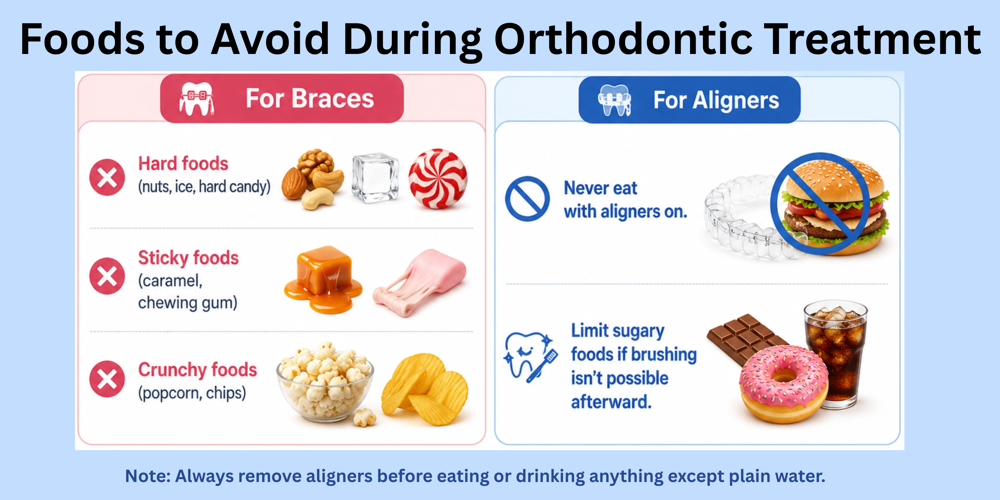

Introduction: Adjusting to Life with Orthodontic Treatment
Orthodontic treatment with braces or clear aligners requires adjustments in daily habits, eating patterns, and oral hygiene. While both options are effective in aligning teeth, they differ in comfort, maintenance, and lifestyle impact.
Understanding these differences, along with proper care techniques and common challenges, can help ensure a smoother treatment experience and better long-term results.
This guide explains everything you need to know about living with braces and aligners, including daily care, diet, common problems, and how to maintain your results after treatment
First Week with Braces or Aligners: What to Expect
The first week is an adjustment phase as your mouth adapts to braces or aligners. Mild discomfort and changes are normal and improve quickly.
Pain or Pressure:
Tightness or soreness is common as teeth begin to move, usually peaking in 2–3 days before easing.
- Braces: gradual, consistent pressure by braces causes mild soreness
- Aligners: initial tightness is felt that reduces within a few days
Irritation:
Braces may irritate cheeks or lips.
- Wax and saltwater rinses can help
- Aligners usually cause less irritation
Speech Changes:
A slight temporary change in speech (more common with aligners) may occur which resolves within a few days.
Eating Changes:
- Braces: softer foods, careful chewing
- Aligners: remove before eating; maintain hygiene
Adjustment Period:
Feeling aware or self-conscious is normal and settles within 1–2 weeks.
Key Takeaway:
Discomfort is temporary—your mouth adapts quickly.
Daily Life Changes with Braces vs Aligners
Orthodontic treatment brings small but important changes to your daily routine.
With Braces:
- Fixed appliance that works continuously
- Requires careful eating habits
- Needs detailed cleaning
With Aligners:
- Removable for eating and brushing
- Nearly invisible
- Requires strict wear time (20–22 hours/day)
While aligners offer flexibility, they demand discipline. Braces, on the other hand, work continuously without relying on patient compliance.
If you’re still deciding between the two, understanding the differences in cost, treatment time, and results can help you make the right choice.Eating With Braces vs Aligners: What to Expect
Your eating habits will need some adjustment during orthodontic treatment.
Braces:
You’ll need to chew carefully and avoid foods that can damage brackets or wires. Eating slowly helps prevent discomfort and breakage.
Aligners:
You must remove them before eating, allowing you to eat normally. Brushing is recommended before reinserting, but rinsing your mouth well is a good alternative when brushing isn’t possible.
Mindful eating not only prevents damage but also keeps your treatment on track.
Foods to Avoid During Orthodontic Treatment

Certain foods can interfere with your progress and should be limited or avoided.
For Braces:
- Hard foods (nuts, ice, hard candy)
- Sticky foods (caramel, chewing gum)
- Crunchy foods (popcorn, chips)
For Aligners:
- Never eat with aligners on
- Limit sugary foods if brushing isn’t possible afterward
Following these guidelines helps prevent damage, staining, and unnecessary delays in treatment.
How to Clean Braces Properly (Daily Routine)?
Maintaining proper oral hygiene with braces requires extra attention and consistency.
Daily Routine:
- Brush after meals whenever possible and at least twice daily
- Use a soft-bristle toothbrush
- Clean carefully around brackets and wires
- Use interdental brushes for hard-to-reach areas
Food particles can easily get trapped, increasing the risk of cavities and gum problems. Following a consistent cleaning routine helps keep your teeth healthy throughout treatment.
How to Clean Clear Aligners Without Damage or Odour?
Proper aligner care is essential to maintain both hygiene and effectiveness during treatment.
Best Practices:
- Rinse aligners every time you remove them
- Clean gently using a soft toothbrush
- Avoid hot water, as it can distort their shape
- Store them in a clean case when not in use
Improper cleaning can lead to odour, staining, and bacterial buildup. Keeping your aligners clean is just as important as maintaining your oral hygiene.
Common Problems with Braces (Pain, Breakage, Food Issues)
Braces can come with minor challenges during treatment, especially in the initial stages.
Common Issues:
- Soreness after adjustments or tightening
- Food getting stuck around brackets
- Broken brackets or loose wires
These concerns can be effectively handled with proper care and timely intervention.Following dietary guidelines and maintaining proper oral hygiene can significantly reduce problems. If discomfort or damage occurs, timely care and orthodontist guidance help keep your treatment on track.
Common Problems with Clear Aligners (Tightness, Odour, Compliance)
Clear aligners also come with a few manageable challenges during treatment.
Common Issues:
- Tightness or pressure when switching to a new tray
- Odour or staining may occur if aligners are not cleaned properly.
- Forgetting to wear aligners consistently
These issues are usually temporary and easy to prevent. Maintaining proper cleaning habits and wearing aligners for the recommended 20–22 hours daily ensure smooth and effective treatment progress.
How to Reduce Orthodontic Discomfort Quickly?
Mild discomfort is a normal part of orthodontic treatment, especially in the early stages or after adjustments.
For Braces:
- Choose softer foods to reduce chewing pressure
- Rinse with warm salt water to soothe irritated gums
- Use orthodontic wax to prevent irritation from brackets or wires
For Aligners:
- A new aligner may feel tight initially, but this usually settles within a few days
- If discomfort feels excessive, remove aligners briefly, then reinsert
- Use orthodontic wax to prevent irritation from brackets or wires
Discomfort usually improves within a few days as your teeth adapt. If pain persists or worsens, consult your orthodontist.
What Happens If You Don’t Wear Aligners Properly?
Clear aligners are only effective when worn consistently as prescribed.
Possible Issues:
- Teeth may not move as planned
- Aligners may feel tight or stop fitting properly
- Treatment duration may increase
Inconsistent wear can slow down or even reverse progress. Wearing aligners for the recommended 20–22 hours daily is essential to achieve the desired results on time.
What to Do If a Bracket or Wire Breaks?
Breakages can occur during treatment, especially if dietary guidelines are not followed.
Immediate Steps:
- Avoid touching or adjusting the wire
- Use orthodontic wax to cover any sharp edges
- Contact your orthodontist for repair as soon as possible
Ignoring or delaying repairs can cause discomfort and affect treatment progress. Prompt action helps prevent further damage and keeps your treatment on schedule.
Oral Hygiene Tips During Orthodontic Treatment
Maintaining good oral hygiene is essential for healthy teeth and successful treatment outcomes.
Essential Tips:
- Brush at least twice daily, and after meals, when possible, especially if food is stuck around braces or teeth.
- Use floss or interdental brushes to clean between teeth
- Rinse with mouthwash if recommended
- Keep your teeth and appliance clean at all times
Poor oral hygiene can lead to cavities, gum disease, and long-term dental issues—even after treatment is complete. A consistent routine helps protect your smile throughout the process.
How to Maintain Results After Treatment (Retainers)?
After completing braces or aligner treatment, retainers are essential to maintain your results. Teeth can gradually shift back over time, making retention important.
Retainers can be:
- Removable retainers – worn as instructed, usually full-time initially, then at night
- Fixed retainers – thin wires bonded behind the teeth for continuous support
Key Points:
- Wear removable retainers exactly as prescribed
- Clean retainers regularly to maintain hygiene
- Avoid skipping usage, especially in the initial months
- Maintain proper oral hygiene around fixed retainers
Retention is a crucial phase of orthodontic care. Following your orthodontist’s guidance ensures your results remain stable and long-lasting.
When to Contact Your Orthodontist?
Knowing when to seek professional help is important for a smooth and safe treatment journey.
Consult your orthodontist if you experience:
- Severe or persistent pain
- Broken brackets or loose wires
- Ill-fitting or uncomfortable aligners
- Swelling, bleeding, or gum issues
Conclusion
Starting orthodontic treatment with braces or aligners is a significant step toward improving your smile and oral health. While the initial days may involve mild discomfort and adjustments in daily habits, most challenges are temporary and manageable with proper care.
Understanding what to expect, maintaining good oral hygiene, following dietary guidelines, and staying consistent with your treatment plan are key to achieving the best results. Whether you choose braces or aligners, commitment and regular care play a crucial role in ensuring smooth progress.
With the right approach and guidance from your orthodontist, you can confidently navigate your treatment journey and enjoy long-lasting results.
Disclaimer: This blog is for educational purposes and does not replace professional dental consultation.
Frequently Asked Questions (FAQs)
References
- 1.Healthline. (n.d.). Aligners vs braces: Pros, cons, and comparison.
- 2. Cleveland Clinic. (2023). Orthodontics.
- 3. American Association of Orthodontists. (n.d.). Braces vs clear aligners.
- 4. Cleveland Clinic. (2022). Clear braces: Types, benefits & how they work.
- 5. Aref, S., Ravuri, P., Kubavat, A. K., Sowmya, C., Nallamilli, L. V. S., Bhanawat, N., & Tiwari, R. (2024). Comparative analysis of braces and aligners: Long-term orthodontic outcomes. Journal of Pharmacy and Bioallied Sciences, 16(Suppl 3), S2385–S2387.
Authored By
Dr. Trupthi Nagendra
BDS, PGCE (Endodontics)
A dentist and dental health educator committed to comprehensive oral care, with a focus on patient education and early intervention. She helps patients understand dental conditions clearly and make informed decisions for timely and appropriate treatment, aiming to maintain long-term oral health and natural teeth preservation.